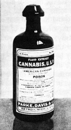

|  |
| |

From 1842 through the 1890s, extremely strong marijuana (then known as cannabis extractums) and hashish extracts, tinctures, and elixirs were routinely the second and third most-used medicines in American for humans (from birth, through childhood, to old age) and in veterinary medicine until the 1920s and longer. (See chapter 6 on “Medicine,” and chapter 13 on the “19th Century.”)
As stated earlier, for at least 3,000 years, prior to 1842, widely varying marijuana extracts (buds, leaves, roots, etc.) were the most commonly used real medicines in the world for the majority of humanity’s illnesses.

However, in Western Europe, the Roman Catholic Church forbade use of cannabis or any medical treatment, except for alcohol or blood letting, for 1,200-plus years. (See chapter 10 on “Sociology.”)
The U.S. Pharmacopoeia indicated cannabis should be used for treating such ailments as: fatigue, fits of coughing, rheumatism, asthma, delirium tremens, migraine headaches, and the cramps and depressions associated with menstruation. (Professor William EmBoden, Professor of Narcotic Botany, California State University, Northridge.)
Queen Victoria used cannabis resins for her menstrual cramps and PMS, and her reign (1837-1901) paralleled the enormous growth of the use of Indian cannabis medicine in the English-speaking world.
In this century, cannabis research has demonstrated therapeutic value—and complete safety—in the treatment of many health problems including asthma, glaucoma, nausea, tumors, epilepsy, infection, stress, migraines, anorexia, depression, rheumatism, arthritis, and possibly herpes. (See chapter 7, “Therapeutic Uses of Cannabis.”)
See also Chapter 6: Medical Literature on Cannabis Medicine and Chapter 7: Therapeutic Use of Cannabis
alternative versions of some pictures
the authorized on-line version of Jack Herer’s “The Emperor Wears No Clothes”
| previous page | intro | next page |
|
 |
 |
 |
 |